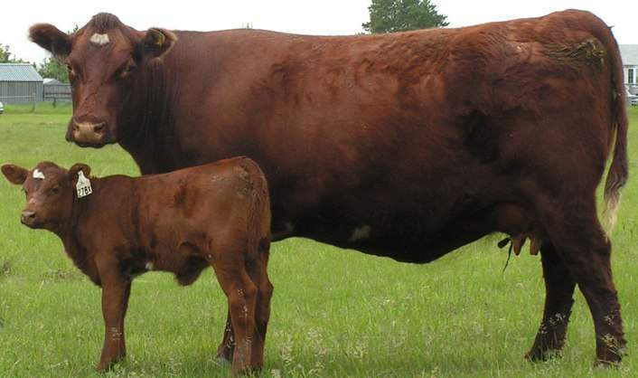
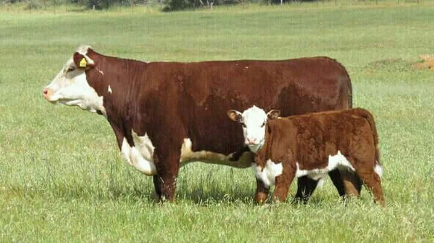
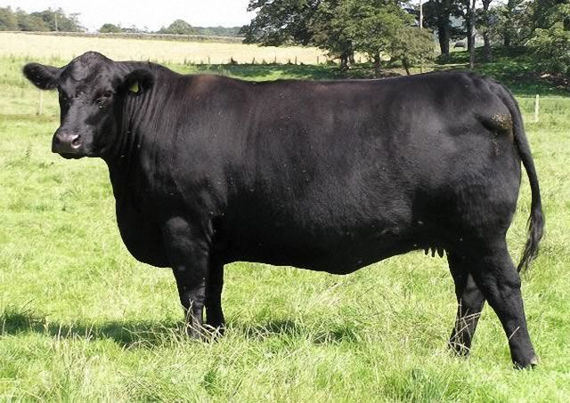
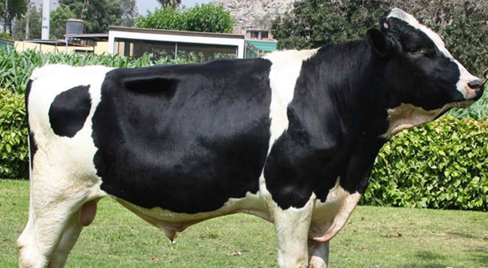
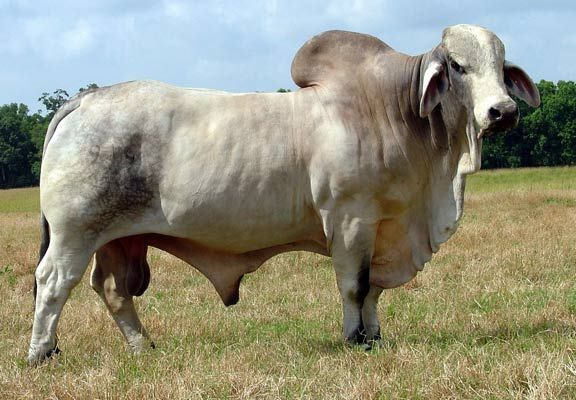

La importancia de la Vaca
Entre los animales que el hombre utiliza desde época inmemorial como ganado doméstico, los vacunos tienen especial preponderancia. Es posible que, al comienzo, matara a los bovinos primitivos con el propósito de comer su carne y utilizar cuero y huesos para sus armas y vestimenta, por resultarle su caza menos riesgosa que la de los alces, osos y jabalíes; luego, es posible que con sentido de previsión capturara ejemplares jóvenes, los retuviera y los domesticara con miras a utilizarlos más ampliamente.
En el transcurso de los siglos, las diferentes especies de bóvidos que habitan en todas los regiones del globo han estado junto al hombre, y éste las ha aprovechado no sólo para alimentarse con sus productos (carne, sangre, leche), sino también como auxiliar valioso en pesadas tareas, a las que se presta por su fuerza y mansedumbre (buey, yak, carabao, cebú).
Características Generales
El peso de una vaca en pleno desarrollo es, término medio, de seiscientos a ochocientos kilogramos (recuérdese que la vaca, en las diferentes razas, es siempre menos corpulenta que el macho). Su altura oscila alrededor del metro y medio, y el pelaje varía no sólo en la coloración, que es característica de cada raza, sino en su abundancia y desarrollo (en los climas fríos, el “pelo de invierno” es más largo y espeso).
En la cabeza se destacan sus ojos, grandes y plácidos, a cuyo aire de vacuidad se alude, cuando se describe la inexpresividad de un rostro, von la frase “expresión bovina”.
En el hocico (morro) lampiño se abren las fosas nasales, amplias, dilatables y siempre húmedas, lo que indica su agudeza de olfato.
Las astas o cuernos, cada vez más inútiles a la especie como armas ofensivas y defensivas (excepto en los toros de lidia), se han ido atrofiando paulatinamente a través de su milenario período de vida doméstica.
No obstante el grosor de su cuero, es muy sensible a las picaduras de los insectos hematófagos (que se alimentan de sangre), de manera que, cuando la atacan moscas, tábanos o mosquitos, los ahuyenta bruscos movimientos, estremecimientos de su piel y, sobre todo, azotándose con su larga cola rematada en un penacho de cerdas.
Su alimentación
Animal herbívoro por excelencia, necesita, como ración diaria, gran cantidad de forraje (alrededor de cincuenta kilogramos), que engulle primero someramente triturado, para luego “rumiarlo” en una cuidadosa segunda masticación. Los animales criados “a campo” recurren, para su alimentación, sólo a los pastos (naturales o sembrados por el hombre), pero los ejemplares valiosos, de raza, sometidos a cuidados especiales en las cabañas, se nutren con raciones balanceadas de avena, cebada, trigo, maíz, afrecho, sal, torta de lino, melaza, leche, etc. (se denomina cabaña al establecimiento rural que, con métodos técnicos, se dedica a la cría de animales de “pedigree”, es decir, de animales cuya genealogía figura en registros especializados).
Razas Bovinas
Mediante sucesivas selecciones, el hombre, a través del tiempo, ha ido realizando cruzas y mestizaciones, hasta fijar ciertas características a determinados tipos de vacunos.
No solo los ha adaptado a los distintos climas, sino que los explota racionalmente con un preconcebido propósito (carne, leche).
Las principales razas vacunas que prosperan en las diferentes zonas de América son las siguientes:
Shorthorn:

Hereford:

Aberdeen Angus:

Holando Argentino:

Cebú:
